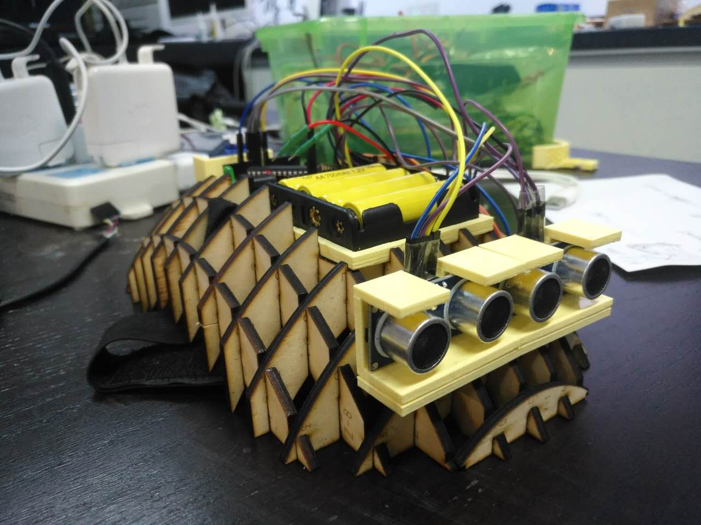

FABO Academy X - China
An intensive course into digital manufacturing and rapid prototyping, organized by Fablab O Shanghai. In this nine classes' program, high-school or college students learn how to envision, prototype and document their ideas through many hours of hands-on experience with digital fabrication tools.
The classes are based on the "Fab Academy" course, directed by Neil Gershenfeld, director of MIT's Center for Bits and Atoms.

Check out the latest amazing final projects from FABO Academy X's students.
The Winter Bootcamp is geared toward educators desiring to understand, experience and improve their implementation of STEAM related activities in teaching practices.